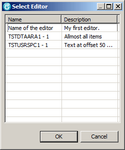

For simple character data areas or decimal or logical data areas that is not required, because the monitor can generate an editor for it. But of course it cannot know anything about user spaces or data areas with mixed data.
Once you have one or more editors for your data space object, you can start the monitor from the context menu of the RSE tree. In case you have more than one editor for the selected object, you need to select the desired editor from the dialog that pops up:

Now the monitor is opened and the content of your data space shows up as defined by the editor.
You can add a watch marker to every field of the dialog from the context menu of the item. A watched icon is decorated like this:

When the view is refreshed and the value of the item has changed, it is painted with a yellow background:

Cool, isn't it?
| Hint: You can change the background color from the Colors and Fonts page of the Eclipse preferences. |
If the monitor encounters a problem when copying the data to the screen, it displays the following message at the bottom, right corner of the view:

If you see that message, you should carefully check whether or not the fields of your editor are properly defined regarding to offset and length.
If the monitor encounters a serious problem when copying the data to the screen, it displays the following message at the bottom, right corner of the view:

If you see that message, you should carefully check whether or not the fields of your editor are properly defined regarding to offset and length.